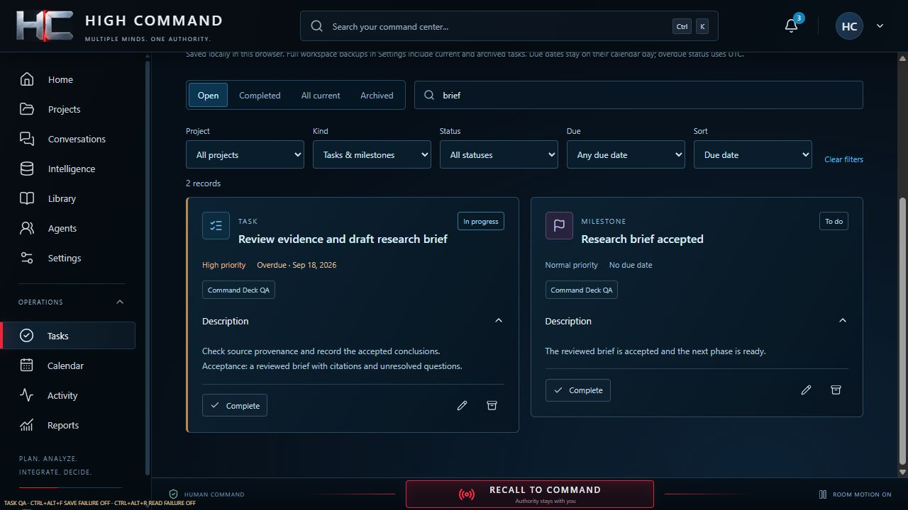

Define the project
InputObjectives + source context
ProcessSaved project and brief
OutputA workspace to return to
Record objectives, status, priorities, and a brief before organizing the work. SQLite retains the project and its history.
I built High Command for one person juggling projects across AI tools. It keeps project briefs, saved conversations, tasks, and milestones together on the PC, with ways to resume interrupted imports and recover saved work. The Windows alpha is working. I also built and tested separate Codex and Google Antigravity connections, including saved conversations and recovery after interruptions. Those connections remain development builds.
I created this under PhalAInx, my independent software studio.
Project at a glance ↓

One person may use several AI tools across software development, academic research, data analysis, writing, and project planning. High Command brings the project’s brief, imported conversation history, and manual work plan into one local workspace. I built it under my PhalAInx studio for people who need to keep that work organized across projects.
I designed and built the application, from the animated Home and adjustable Command Deck to project organization, tasks, local storage, backups, and Windows packaging. I also built saved AI profiles and project-specific conversation histories, connected two providers in separate development builds, and tested what happens when a response or command is stopped before it finishes.
Projects retain their briefs, status, priority, and history. Imported conversations keep their original messages and order, with separate tags and links to one or several projects. Tasks and milestones add due dates, acceptance criteria, completion, and archive/restore controls. The Command Deck brings the linked records together, while search and Activity help the user find and resume work.
The Home screen is a functioning animated interface with interactive monitors. Its room animation and optional ambient sound continue across screens, pause when the window is minimized, and resume from the same position. Motion and sound have separate controls. Four selectable local voice packs announce real workspace events, such as a saved project, an imported conversation, a backup operation, or a failure. Playback is queued, can be filtered or muted, and works without a speech-service connection.
| Layer | Implemented tools and purpose |
|---|---|
| Interface | React, TypeScript, and Vite build the shared interface, forms, navigation, and adjustable panels. |
| Windows host | Tauri 2 runs the interface in WebView2, Microsoft’s embedded web renderer, and connects it to native commands and file dialogs. |
| Application services | Rust validates records and runs database operations separately from interface rendering. |
| Local storage | SQLite stores projects, ordered messages, tags, links, tasks, milestones, settings, and migration receipts. The browser preview uses a separate IndexedDB workspace. |
I built the reader to load long conversations in sections while keeping their source references. Copying or exporting a whole message checks its full contents separately. The importer accepts supported text and JSON files, saves progress, and allows pause and resume. Imported conversations become available after their checks pass.
I separated record updates, import controls, and preference refresh so a slow read cannot hold up recovery. I also made the app explain when a source changes or an import format is unsupported. Large conversations still have size limits.
I built revision checks into the save path so an editor opened before a newer change cannot silently replace it. Related records and links are saved together: the whole change succeeds or rolls back. I kept failed forms and drafts available for retry and separated imported message text from later tags and project links. Those decisions protect both the original history and the user’s organization work.
I built complete workspace backups in SQLite and checks that restored projects, messages, and links remain intact. An older JSON option is still available but refuses requests it cannot represent correctly. I tested interrupted imports, lost replies, and backup restoration in the packaged app using a separate test workspace.
I tested the failures most likely to lose work: interrupted imports, repeated requests, lost replies, competing edits, service failures, reconnects, database upgrades, and backup restoration. I checked the portable app and a separate test installation, alongside interface tests using invented records.
For the October 22 build, I checked recovery and record ownership through 167 JavaScript tests, 185 native tests, 137 interface checks, and eight checks of messages exchanged between the interface and storage service. I also tested importing different file formats, interrupting work, and reading saved conversations in the packaged and separately installed apps.
I used invented records and simulated services for browser tests, then tested the real Windows service, database, imports, and restoration in the packaged app. That pass did not cover the native file picker, actual clipboard copying, installation on a clean computer, or a full accessibility review.
I built saved AI profiles so a user can choose instructions, a model, and a reasoning setting, then assign that profile to a project. Each session keeps the profile version and working folder it started with. Users can return to a separate saved history without mixing its messages with another project’s conversation. Selecting a profile does not start work; the user connects and sends each request.
The Codex tests used two separate profiles, each with its own instructions. Both returned the expected response before and after reconnecting. This checked that HC sent each profile’s instructions to the right conversation. Only one response runs at a time; assigning several profiles does not make them an automatically collaborating team.
I built and tested connections to Codex and Google Antigravity, which provides access to Gemini. In the separate Antigravity development build, a user can use the provider’s existing sign-in, send a message, watch the reply arrive, stop it, and reopen the saved conversation. HC keeps the selected provider and model with that history.
I deliberately interrupted live connections to check what happened to unfinished replies. HC retained the text already received and marked the result unknown when completion could not be confirmed. Reconnecting preserved that record without automatically sending the prompt again. I also fixed a timing bug that could lose a Stop request while the app was still preparing a message.
I tested a complete live reply, Stop, a deliberately lost connection, and reopening the same conversation in the October 25 Antigravity build. I also checked saved history and database restoration. Supporting tests covered 184 frontend cases, 198 SQLite cases with two existing tests ignored, and 34 interface cases. Follow-up checks targeted cancellation timing, malformed replies, and connection cleanup.
That first Antigravity build handled text conversations. I later added file access, commands, and reviewed handoffs in separate development builds. I am still testing those additions before putting them in the regular app.
A connection tied to one particular Codex executable could stop working after an update. I built a replacement that finds the installed Windows client, verifies its publisher, and checks whether it can exchange the messages HC expects. Compatible updates can pass those checks without the user selecting an executable or approving a new file fingerprint. The checks do not send a model prompt.
I built connection messages that explain what is happening: finding the client, checking it, ready, sign-in needed, or a failure with a next action. Users can cancel or retry, and saved conversations stay readable if the connection fails. I tested the complete connection in a separate Windows build; the regular app and Pilot launchers still use their earlier builds.
I built command records that keep the requested action, the user’s approval or refusal, the output, and the outcome together. In testing, I found that Stop could wait behind a blocked database write while a PowerShell command kept running. I moved interruption and process cleanup out of that waiting path. The separate Windows candidate now stops the command without waiting for the database to become available, then finishes saving its recovery record when storage recovers.
I tested this with a real database write lock and other deliberately stalled operations. HC stopped its command, retained the output already saved, and reconnected without running the command again. A stopped process and a successfully saved record are reported separately. If the command’s final result cannot be confirmed, it remains marked unknown.
I tested twelve cases in the October 25 Windows build, including sign-in, Unicode text, file and command approvals, refusal, Stop, disconnection, and recovery. I checked that reconnecting, restarting the service, and restoring the database preserved the saved history. Stop also worked while storage was blocked. In two cases, the app stopped its child process in about 0.28 seconds; timing will depend on the machine and command.
Live tests exposed changes in the client’s approval messages. I updated HC to handle one-time approval and refusal, and to reject requests for broader permission. These tests covered the supported Windows Store client. I have not moved this build into the regular app or Pilot launcher. A file-preview problem in the earlier Antigravity build was followed by separate file and command testing.
I built a workflow for a common problem: an answer is ready, but the next assistant needs the right brief and the exact version to inspect. The user selects a task, its requirements, relevant project notes, and an assistant profile. HC shows the prepared context before anything is sent.
After the first assistant finishes, HC preserves its answer as a versioned output. The user reviews the handoff and starts the inspector separately. The inspector receives that saved answer and its requirements. Its response is advice for the user; accepting the work and completing the task remain separate decisions.
This keeps the review connected to what was actually produced. If the answer or task requirements change, an earlier approval no longer counts as approval of the changed work. The original answer and review remain available.
I tested the handoff with a small arithmetic task on October 30: Codex produced an answer, and Antigravity inspected the exact saved version. Both requests completed, and their two attempts and four messages survived restart and database restoration. That checked whether the handoff worked and kept its records; it was too small a task to judge research-review quality.
After repairing the interface, I checked twelve cases with simulated responses, from preparing and approving a request through starting the writer, handing its answer to the inspector, and reopening the work. I still need to repeat the live-model run in that rebuilt interface. The regular app and Pilot launcher remain on their earlier builds.
I exercised a three-role workflow on a real research task: a researcher gathered evidence, a writer prepared the brief, and an editor checked the sources and reviewed the exact draft. The editor examined the source material before seeing the writer’s answer, so the review began with its own source assessment.
The supervised experiment completed five live requests across separate role profiles and conversations. The editor’s publication step preserved the writer’s approved text in the final PDF. I also ran separate author–reviewer trials using two Codex assistants and a Codex–Antigravity pair. Those trials required reading sources, checking claims, and producing a cited document.
I built checks that followed the work through the saved conversations, restored database, and exported record. They confirmed that the recorded messages, commands, approvals, and finished brief retained their contents. Failed attempts remained visible alongside the completed work, so the record also showed where recovery had been needed.
In the October 30 three-role trial, I checked that all 20 messages and 41 command/approval pairs survived export and database restoration. The failed command stayed visible, and the final brief matched the draft approved within the assistant workflow. That approval was a step in the experiment, not my final acceptance of the research.
I completed these supervised experiments using separate role profiles and conversations. A production interface for the three-role workflow is not implemented. The trials produced and preserved a sourced brief, with selective source review; they did not cover every revision or disagreement, or measure whether the workflow improves research quality or reduces shared model bias.
I found and repaired a timing problem where Start could wait for the database, miss a Stop request, and begin work after the delay ended. The workflow now registers cancellation before that wait. Stopping or closing the workflow cancels the pending start, even while the database is unavailable.
Unsent text also stays protected when the user changes screens. Saved results retain their original request and conversation, and uncertain outcomes stay visible for review. Recovery does not automatically resend a request. These controls help a user resume work without accidentally repeating an action or reviewing the wrong answer.
The Windows alpha is working: it organizes projects, imports conversations, and preserves saved work. I have also built and tested provider connections and reviewed handoffs in separate development builds. Those additions use one provider and one executing role at a time, with the user starting each role and approving the handoff. They are not yet part of the regular app. Claude and other provider connections are future additions.
High Command serves one person managing work across AI tools. Research Architect gives each member of a human team a configured AI assistant and connects their work through shared methods, context, review, and handoffs. They are separate products from PhalAInx.
Explore each stage of the work.
Record objectives, status, priorities, and a brief before organizing the work. SQLite retains the project and its history.
Keep original message text and order, stage supported source files, and retain verified import progress across pause, close, and recovery. This workflow describes imported conversations. The separate opt-in Codex pilot also captures text from its own live session.
Create, complete, reopen, archive, and restore manual work. The Command Deck shows tasks linked to the current project.
Saved records show what succeeded, what failed, and what remains unknown. Full workspace backups preserve the captured history. Retry and reconnect controls help the user return to unresolved work.